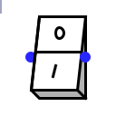

interrupteur
interrupteur
| Librairie : | Input/Output Extra |
| Introduction : | 2.15 in Logisim ITA Component |
| Apparence : |  |
Comportement
Ce composant simule un interrupteur. Quand il est ouvert, sa sortie a l'ouest est positionée dans l'état indéfini (U) et quand il est fermé il recopie l'état de son entrée a l'est sur sa sortie.
Broches
- A l'est
- Sortie : A l'état indéfini (U) quand l'interrupteur est ouvert et recopie l'état de entrée quand l'interrupteur est fermé. Largeur de donnée en bit en accord avec l'attribut Largeur de donnée.
- A l'ouest
- Entrée : Signal qui sera recopié sur la sortie quand l'interrupteur est fermé. Largeur de donnée en bit en accord avec l'attribut Largeur de donnée.
Attributs
- Orientation
- La direction du composant, sa sortie par rapport à son entrée.
- Largeur de donnée
- La largeur de donnée en bit de l'entrée et de la sortie.
- Couleur
- La couleur du fond de l'interrupteur.
- Etiquette
- Le texte de l'étiquette associée au composant.
- Emplacement de l'étiquette
- L'emplacement de l'étiquette par rapport au composant.
- Police de l'étiquette
- La police de caractères avec laquelle l'étiquette doit être affichée.
Comportement de l'outil pousser
A chaque clic gauche sur l'interrupteur, celui-ci bascule d'un état à l'autre.
Comportement de l'outil text
Permets de modifier l'étiquette associée au composant.
Retour à Référence de la bibliothèque